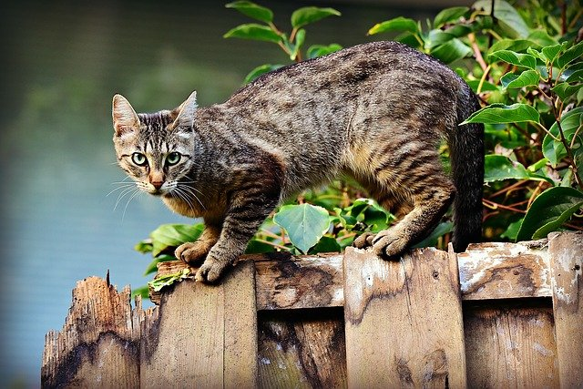

설명
고양이(학명: Felis catus, 영어: Cat)는 식육목 고양이과에 속하는 포유류다.
들고양이(영어: Wild Cat)는 약 10만 년에서 7만년 전부터 존재했다. 길들
여진 고양이의 기원은 약 1만년 전 중동 지역에서 스스로 숲속을 나와 사람
들이 모여사는 마을에 정착하여 길들여진 아프리카들고양이(학명: Felis lybica)로
추측된다.

출처 :https://ko.wikipedia.org/wiki/%EA%B3%
A0%EC%96%91%EC%9D%B4